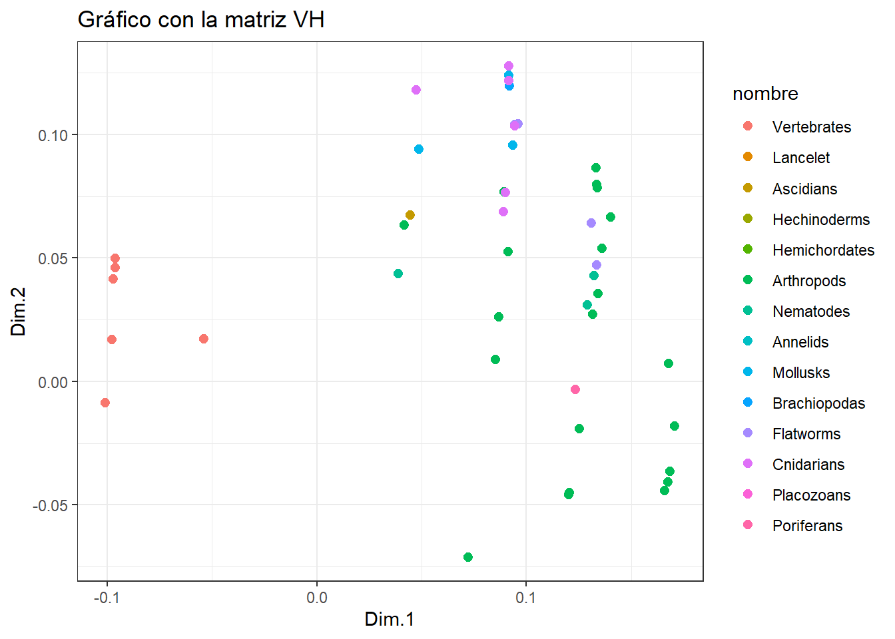
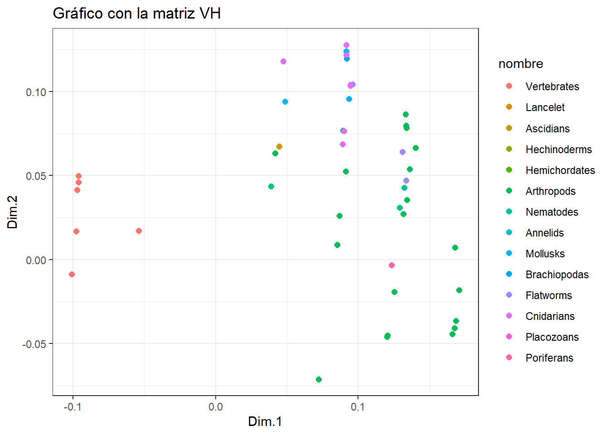
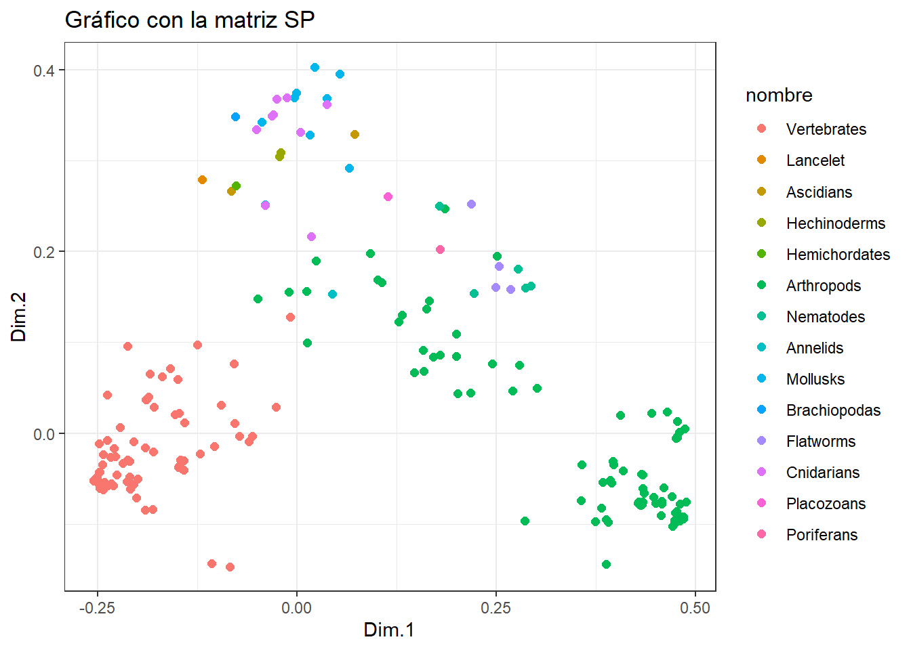
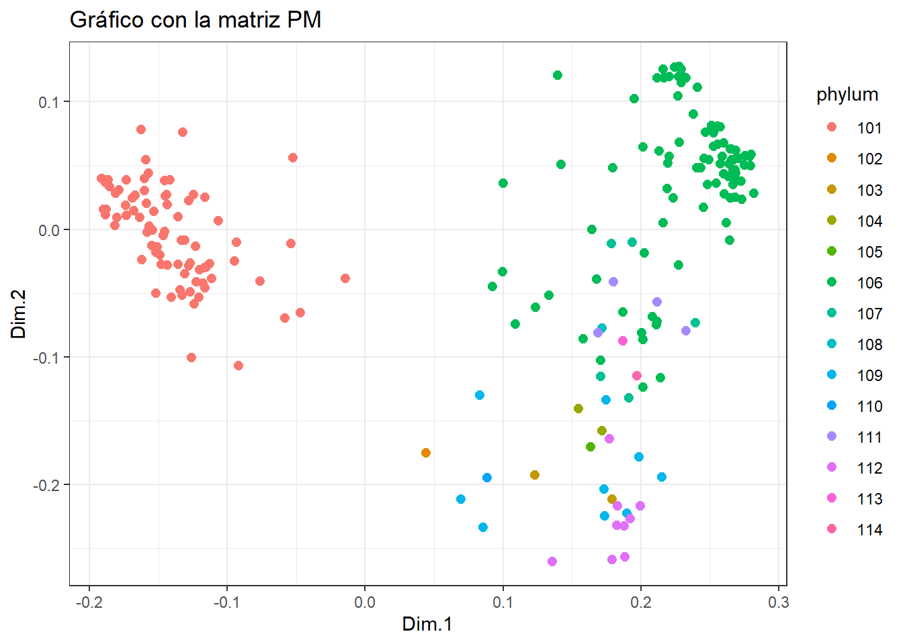

library(tidyverse)
library(ggplot2)
library(mds)
library(ggpubr)Entrega5 AD: MDS
El metabolismo se caracteriza por reacciones químicas vinculadas entre sí, creando una compleja estructura de red. Una representación simplificada del metabolismo, que denominamos red metabólica abstracta, es un grafo en el que las vías metabólicas son nodos y existe una arista entre dos nodos si sus correspondientes vías comparten uno o más compuestos.
Para explorar los potenciales y límites de una representación tan básica, hemos empleado tres tipos de kernels (distancias entre grafos):
VH (Vertex histogram): solo tiene en cuenta si las etiquetas de los nodos de los grafos que se comparan son iguales o no.
SP (Shortest-Path): compara los grafos en función de sus caminos más cortos. Intuitivamente, esto significa medir lo fácil o difícil que es conectar, a través de compuestos compartidos, parejas de caminos en los dos grafos.
PM (Pyramid Match): mide la similitud de las características topológicas (por ejemplo, la conectividad) de los nodos con la misma etiqueta en los dos grafos comparados.
La práctica consiste en representar gráficamente (con solo 2 coordenadas principales) las matrices de similitud generadas por cada kernel coloreando los puntos de acuerdo al grupo de animales de acuerdo a su phylum.
Datos
Cargamos las librerías
Cargamos las matrices de datos
lista_animales = read.table("fileListANIMAL_phylum.txt")
nombres = lista_animales[,1]
phylum = lista_animales[,2]
datos_VH = read.table("ANIMALS-matrixVH.txt")
colnames(datos_VH) = nombres
rownames(datos_VH) = nombres
datos_SP = read.table("ANIMALS-matrixSP.txt")
colnames(datos_SP) = nombres
rownames(datos_SP) = nombres
datos_PM = read.table("ANIMALS-matrixPM.txt")
colnames(datos_PM) = nombres
rownames(datos_PM) = nombres
names_phylum = read_table("names_phylum.txt", col_types = cols(numero = col_character(), phylum = col_factor()))
names_phylum$phylum[1][1] Vertebrates
14 Levels: Vertebrates Lancelet Ascidians Hechinoderms ... PoriferansVH (Vertex histogram)
Puesto que nos dan la matriz de similaridad, vamos a convertirla en una matatriz de distancias.
dist_VH <- sqrt(2*(1-datos_VH))Tenemos la lista de animales con su phylum y tres matrices de distancias o similitudes. Estas matrices son cuadradas de dimensión 370, que sería el número de observaciones del dataset original.
vh.mds<-cmdscale(dist_VH,k=2)Con el resultado del análisis de MDS, creamos el siguiente data frame añadiendo una nueva variable tipo factor que nos indique a que phylum pertenece (14 niveles).
tibble_vh.mds = as.tibble(vh.mds); tibble_vh.mdsWarning: `as.tibble()` was deprecated in tibble 2.0.0.
ℹ Please use `as_tibble()` instead.
ℹ The signature and semantics have changed, see `?as_tibble`.Warning: The `x` argument of `as_tibble.matrix()` must have unique column names if
`.name_repair` is omitted as of tibble 2.0.0.
ℹ Using compatibility `.name_repair`.
ℹ The deprecated feature was likely used in the tibble package.
Please report the issue at <https://github.com/tidyverse/tibble/issues>.# A tibble: 370 × 2
V1 V2
<dbl> <dbl>
1 -0.101 -0.00874
2 -0.101 -0.00874
3 -0.101 -0.00874
4 -0.101 -0.00874
5 -0.101 -0.00874
6 -0.101 -0.00874
7 -0.101 -0.00874
8 -0.101 -0.00874
9 -0.101 -0.00874
10 -0.101 -0.00874
# ℹ 360 more rowstibble_vh.mds = cbind(tibble_vh.mds, as.factor(phylum))
tibble_vh.mds <- tibble_vh.mds %>%
rename(X=V1, Y=V2, phylum = "as.factor(phylum)")
tibble_vh.mds = tibble_vh.mds %>% mutate(nombre = case_when(
phylum == 101 ~ names_phylum$phylum[1],
phylum == 102 ~ names_phylum$phylum[2],
phylum == 103 ~ names_phylum$phylum[3],
phylum == 104 ~ names_phylum$phylum[4],
phylum == 105 ~ names_phylum$phylum[5],
phylum == 106 ~ names_phylum$phylum[6],
phylum == 107 ~ names_phylum$phylum[7],
phylum == 108 ~ names_phylum$phylum[8],
phylum == 109 ~ names_phylum$phylum[9],
phylum == 110 ~ names_phylum$phylum[10],
phylum == 111 ~ names_phylum$phylum[11],
phylum == 112 ~ names_phylum$phylum[12],
phylum == 113 ~ names_phylum$phylum[13],
phylum == 114 ~ names_phylum$phylum[14]))
tibble_vh.mds %>% glimpse()Rows: 370
Columns: 4
$ X <dbl> -0.1007984, -0.1007984, -0.1007984, -0.1007984, -0.1007984, -0.…
$ Y <dbl> -0.008738438, -0.008738438, -0.008738438, -0.008738438, -0.0087…
$ phylum <fct> 101, 101, 101, 101, 101, 101, 101, 101, 101, 101, 101, 101, 101…
$ nombre <fct> Vertebrates, Vertebrates, Vertebrates, Vertebrates, Vertebrates…df_vh.mds = cbind(data.frame(vh.mds), as.factor(phylum))
colnames(df_vh.mds) = c("X", "Y", "phylum")
glimpse(df_vh.mds)Rows: 370
Columns: 3
$ X <dbl> -0.1007984, -0.1007984, -0.1007984, -0.1007984, -0.1007984, -0.…
$ Y <dbl> -0.008738438, -0.008738438, -0.008738438, -0.008738438, -0.0087…
$ phylum <fct> 101, 101, 101, 101, 101, 101, 101, 101, 101, 101, 101, 101, 101…p <- ggplot(tibble_vh.mds, aes(x = X, y = Y, color = nombre)) +
geom_point(size = 2.2) +
labs(title = "Gráfico con la matriz VH", x = "Dim.1", y = "Dim.2") +
theme(legend.position = "right") +
theme_bw()
# Mostrar el gráfico
print(p)
pp <- ggscatter(tibble_vh.mds, x = "X", y = "Y", color = "nombre") +
labs(title = "Gráfico con la matriz VH", x = "Dim.1", y = "Dim.2") +
theme(legend.position = "right") +
theme_bw()
print(pp)
Realicemos el mismo procedimiento para las otras dos matrices de similaridad.
SP (Shortest-Path)
Convertimos la matriz “ANIMALS-matrixSP” en una matriz de distancias.
dist_SP <- sqrt(2*(1-datos_SP))Tenemos la lista de animales con su phylum y tres matrices de distancias o similitudes. Estas matrices son cuadradas de dimensión 370, que sería el número de observaciones del dataset original.
sp.mds<-cmdscale(dist_SP,k=2)Con el resultado del análisis de MDS, creamos el siguiente data frame añadiendo una nueva variable tipo factor que nos indique a que phylum pertenece (14 niveles).
tibble_sp.mds = as.tibble(sp.mds); tibble_sp.mds# A tibble: 370 × 2
V1 V2
<dbl> <dbl>
1 -0.254 -0.0527
2 -0.254 -0.0527
3 -0.254 -0.0527
4 -0.213 -0.0535
5 -0.254 -0.0527
6 -0.254 -0.0527
7 -0.254 -0.0527
8 -0.254 -0.0527
9 -0.250 -0.0540
10 -0.248 -0.0425
# ℹ 360 more rowstibble_sp.mds = cbind(tibble_sp.mds, as.factor(phylum))
tibble_sp.mds <- tibble_sp.mds %>%
rename(X=V1, Y=V2, phylum = "as.factor(phylum)")
tibble_sp.mds = tibble_sp.mds %>% mutate(nombre = case_when(
phylum == 101 ~ names_phylum$phylum[1],
phylum == 102 ~ names_phylum$phylum[2],
phylum == 103 ~ names_phylum$phylum[3],
phylum == 104 ~ names_phylum$phylum[4],
phylum == 105 ~ names_phylum$phylum[5],
phylum == 106 ~ names_phylum$phylum[6],
phylum == 107 ~ names_phylum$phylum[7],
phylum == 108 ~ names_phylum$phylum[8],
phylum == 109 ~ names_phylum$phylum[9],
phylum == 110 ~ names_phylum$phylum[10],
phylum == 111 ~ names_phylum$phylum[11],
phylum == 112 ~ names_phylum$phylum[12],
phylum == 113 ~ names_phylum$phylum[13],
phylum == 114 ~ names_phylum$phylum[14]))
tibble_sp.mds %>% glimpse()Rows: 370
Columns: 4
$ X <dbl> -0.2540277, -0.2540277, -0.2540277, -0.2133845, -0.2540277, -0.…
$ Y <dbl> -0.05265226, -0.05265226, -0.05265226, -0.05348145, -0.05265226…
$ phylum <fct> 101, 101, 101, 101, 101, 101, 101, 101, 101, 101, 101, 101, 101…
$ nombre <fct> Vertebrates, Vertebrates, Vertebrates, Vertebrates, Vertebrates…df_sp.mds = cbind(data.frame(sp.mds), as.factor(phylum))
colnames(df_sp.mds) = c("X", "Y", "phylum")
glimpse(df_sp.mds)Rows: 370
Columns: 3
$ X <dbl> -0.2540277, -0.2540277, -0.2540277, -0.2133845, -0.2540277, -0.…
$ Y <dbl> -0.05265226, -0.05265226, -0.05265226, -0.05348145, -0.05265226…
$ phylum <fct> 101, 101, 101, 101, 101, 101, 101, 101, 101, 101, 101, 101, 101…df_sp.mds X Y phylum
hsa -0.2540277057 -0.052652258 101
ptr -0.2540277057 -0.052652258 101
pps -0.2540277057 -0.052652258 101
ggo -0.2133845371 -0.053481447 101
pon -0.2540277057 -0.052652258 101
nle -0.2540277057 -0.052652258 101
mcc -0.2540277057 -0.052652258 101
mcf -0.2540277057 -0.052652258 101
csab -0.2501718442 -0.053982310 101
caty -0.2477234537 -0.042508355 101
panu -0.2540277057 -0.052652258 101
rro -0.2540277057 -0.052652258 101
rbb -0.2540277057 -0.052652258 101
tfn -0.2540277057 -0.052652258 101
pteh -0.2477942168 -0.011260338 101
cjc -0.2524725102 -0.051082104 101
sbq -0.2467878883 -0.060754084 101
mmur -0.2540277057 -0.052652258 101
mmu -0.2540277057 -0.052652258 101
mcal -0.2540277057 -0.052652258 101
mpah -0.2540277057 -0.052652258 101
rno -0.2540277057 -0.052652258 101
mcoc -0.2540277057 -0.052652258 101
mun -0.2540277057 -0.052652258 101
cge -0.2540277057 -0.052652258 101
pleu -0.2540277057 -0.052652258 101
ngi -0.2540277057 -0.052652258 101
hgl -0.2540277057 -0.052652258 101
ccan -0.2540277057 -0.052652258 101
ocu -0.2125737754 -0.029469855 101
opi -0.2540277057 -0.052652258 101
tup -0.2540277057 -0.052652258 101
cfa -0.2505728666 -0.047932443 101
vvp -0.2467878883 -0.060754084 101
vlg -0.2295213074 -0.016886443 101
aml -0.2520942816 -0.051049849 101
umr -0.1072227063 -0.143571528 101
uah -0.2540277057 -0.052652258 101
oro -0.2540071178 -0.052296995 101
elk -0.2540277057 -0.052652258 101
mpuf -0.2540277057 -0.052652258 101
eju -0.2336849505 -0.026412013 101
mlx -0.2540277057 -0.052652258 101
fca -0.2540277057 -0.052652258 101
pyu -0.2540277057 -0.052652258 101
pbg -0.2540277057 -0.052652258 101
ptg -0.2540277057 -0.052652258 101
ppad -0.2540277057 -0.052652258 101
aju -0.2540277057 -0.052652258 101
hhv -0.2540277057 -0.052652258 101
bta -0.2329165306 -0.055710100 101
bom -0.2540277057 -0.052652258 101
biu -0.2469801144 -0.042772416 101
bbub -0.2540277057 -0.052652258 101
chx -0.2375129845 -0.007919187 101
oas -0.2540277057 -0.052652258 101
oda -0.2540277057 -0.052652258 101
ccad -0.2540277057 -0.052652258 101
ssc -0.2336849505 -0.026412013 101
cfr -0.2503064874 -0.054288290 101
cbai -0.2540277057 -0.052652258 101
cdk -0.2540277057 -0.052652258 101
bacu -0.2540277057 -0.052652258 101
lve -0.1901818807 -0.016106081 101
oor -0.2540277057 -0.052652258 101
dle -0.2540277057 -0.052652258 101
pcad -0.2431404039 -0.023458684 101
ecb -0.2540277057 -0.052652258 101
epz -0.2540277057 -0.052652258 101
eai -0.2540277057 -0.052652258 101
myb -0.2436674774 -0.034639711 101
myd -0.2540277057 -0.052652258 101
mmyo -0.2336849505 -0.026412013 101
mna -0.2540277057 -0.052652258 101
pkl -0.2278012494 -0.025516292 101
hai -0.2540277057 -0.052652258 101
dro -0.2540277057 -0.052652258 101
shon -0.2217391827 0.006579303 101
ajm -0.2118900151 0.095866176 101
pdic -0.2540277057 -0.052652258 101
mmf -0.2540277057 -0.052652258 101
rfq -0.2485894786 -0.052647521 101
pale -0.2366960825 -0.057785088 101
pgig -0.2425797836 -0.058680810 101
ray -0.2366960825 -0.057785088 101
mjv -0.2336849505 -0.026412013 101
tod -0.2540277057 -0.052652258 101
lav -0.2329165306 -0.055710100 101
tmu -0.2540277057 -0.052652258 101
mdo -0.2094867818 -0.031180079 101
gas -0.1803694504 -0.083952319 101
shr -0.2374155655 -0.057769087 101
pcw -0.2540277057 -0.052652258 101
oaa -0.2010027905 -0.071048128 101
gga -0.2540277057 -0.052652258 101
pcoc -0.2329165306 -0.055710100 101
mgp -0.2540277057 -0.052652258 101
cjo -0.2540277057 -0.052652258 101
nmel -0.2477234537 -0.042508355 101
apla -0.0561770633 -0.003594191 101
acyg -0.0952459776 0.031339997 101
tgu -0.2378543564 0.042477352 101
lsr -0.2523428948 -0.051516715 101
scan -0.1475868798 -0.036199002 101
pmoa -0.2540277057 -0.052652258 101
otc -0.2540277057 -0.052652258 101
pruf -0.2540277057 -0.052652258 101
gfr -0.1416034912 -0.030458869 101
fab -0.1455492635 -0.029113726 101
phi -0.2540277057 -0.052652258 101
pmaj -0.2254421487 -0.046107846 101
ccae -0.1416034912 -0.030458869 101
ccw -0.0788749565 0.076591987 101
etl -0.2477234537 -0.042508355 101
fpg -0.2298295370 -0.057420324 101
fch -0.2503064874 -0.054288290 101
clv -0.2329165306 -0.055710100 101
egz -0.1037851139 -0.014280443 101
nni -0.2298295370 -0.057420324 101
acun -0.0781342982 0.011143156 101
padl -0.0086149249 0.127940575 101
aam -0.1416326145 -0.040222569 101
arow -0.1442566786 -0.039061996 101
npd -0.1482024509 -0.037716854 101
dne -0.1442566786 -0.039061996 101
asn -0.2540277057 -0.052652258 101
amj -0.2467878883 -0.060754084 101
cpoo -0.0599574754 -0.009458508 101
ggn -0.0719093611 -0.003146391 101
pss -0.2085898984 -0.061197245 101
cmy -0.2329165306 -0.055710100 101
cpic -0.2540277057 -0.052652258 101
tst -0.2049606799 -0.056054216 101
cabi -0.2503064874 -0.054288290 101
acs -0.2098854696 -0.048314406 101
pvt -0.2430666700 -0.062390115 101
sund -0.2430666700 -0.062390115 101
pbi -0.2430666700 -0.062390115 101
pmur -0.2467878883 -0.060754084 101
tsr -0.2182711263 -0.032994682 101
pgut -0.1800068853 -0.020152413 101
vko -0.2430666700 -0.062390115 101
pmua -0.2467878883 -0.060754084 101
zvi -0.2467878883 -0.060754084 101
gja -0.2454949982 -0.059688928 101
xla -0.2544655133 -0.052293784 101
xtr -0.2517752882 -0.050885897 101
npr -0.2544655133 -0.052293784 101
dre -0.1691514346 0.062067345 101
srx -0.2472256959 -0.060395610 101
sanh -0.2472256959 -0.060395610 101
sgh -0.1890809613 0.036693322 101
ccar -0.1213864739 -0.022852991 101
caua -0.2472256959 -0.060395610 101
ipu -0.2443564934 -0.055716343 101
phyp -0.2443564934 -0.055716343 101
amex -0.1583940346 0.071432159 101
eee -0.2443564934 -0.055716343 101
tru -0.1890809613 0.036693322 101
tng -0.0842413555 -0.146898255 101
lco -0.1786905844 0.029132560 101
ncc -0.1476491756 0.021826295 101
cgob -0.1993488113 -0.050049498 101
ely -0.2472256959 -0.060395610 101
plep -0.1899100487 -0.084959413 101
sluc -0.2472256959 -0.060395610 101
ecra -0.2472256959 -0.060395610 101
pflv -0.2472256959 -0.060395610 101
gat -0.2472256959 -0.060395610 101
ppug -0.2472256959 -0.060395610 101
msam -0.1860698382 0.039775129 101
cud -0.2048721764 -0.009301702 101
mze -0.1890809613 0.036693322 101
onl -0.2472256959 -0.060395610 101
oau -0.2472256959 -0.060395610 101
ola -0.2456572771 -0.056871816 101
oml -0.2472256959 -0.060395610 101
xma -0.2472256959 -0.060395610 101
xco -0.2472256959 -0.060395610 101
xhe -0.2472256959 -0.060395610 101
pret -0.2450584475 -0.059222152 101
cvg -0.1890809613 0.036693322 101
ctul -0.2442145728 -0.057313803 101
nfu -0.2472256959 -0.060395610 101
kmr -0.1890809613 0.036693322 101
alim -0.1890809613 0.036693322 101
aoce -0.1886172230 0.036642845 101
csem -0.1531081521 0.020522974 101
pov -0.2472256959 -0.060395610 101
ssen -0.2472256959 -0.060395610 101
lcf -0.1890809613 0.036693322 101
sdu -0.2472256959 -0.060395610 101
slal -0.2472256959 -0.060395610 101
xgl -0.1890809613 0.036693322 101
hcq -0.2413047755 -0.053870271 101
bpec -0.2472256959 -0.060395610 101
malb -0.2472256959 -0.060395610 101
sasa -0.2442145728 -0.057313803 101
otw -0.1860698382 0.039775129 101
omy -0.1890809613 0.036693322 101
salp -0.1411148916 0.011749815 101
snh -0.2472256959 -0.060395610 101
els -0.2472256959 -0.060395610 101
sfm -0.2472256959 -0.060395610 101
pki -0.1890809613 0.036693322 101
aang -0.2442145728 -0.057313803 101
loc -0.1492416421 0.059180517 101
pspa -0.1840919105 0.065061112 101
arut -0.1840919105 0.065061112 101
lcm -0.2544384013 -0.052111165 101
cmk -0.0260866224 0.028778783 101
rtp -0.1245431061 0.097353227 101
bfo -0.1187065287 0.279202710 102
bbel -0.1187065287 0.279202710 102
cin 0.0722651059 0.329651596 103
sclv -0.0820982980 0.267025606 103
spu -0.0197752678 0.309353673 104
aplc -0.0220646125 0.304622727 104
sko -0.0761657185 0.272366524 105
dme 0.4287657773 -0.075980995 106
der 0.4307859198 -0.079388947 106
dse 0.3570793502 -0.034498693 106
dsi 0.3949162457 -0.055060654 106
dya 0.4294862820 -0.078426710 106
dan 0.3968640882 -0.034360945 106
dsr 0.4307859198 -0.079388947 106
dpo 0.4759648627 -0.086224906 106
dpe 0.4307859198 -0.079388947 106
dmn 0.4307859198 -0.079388947 106
dwi 0.4335994660 -0.075895043 106
dgr 0.4273918257 -0.077112934 106
dmo 0.4307859198 -0.079388947 106
daz 0.4354460754 -0.065924204 106
dnv 0.4307859198 -0.079388947 106
dhe 0.4307859198 -0.079388947 106
dvi 0.3965790982 -0.030605756 106
ccat 0.4287657773 -0.075980995 106
bod 0.3928642880 -0.051599030 106
mde 0.3949162457 -0.055060654 106
scac 0.4333291092 -0.060440882 106
lcq 0.3837363536 -0.054260324 106
aga 0.4314304662 -0.078447048 106
acoz 0.4307859198 -0.079388947 106
aara 0.4307859198 -0.079388947 106
aag 0.4307859198 -0.079388947 106
aalb 0.4713226413 -0.102146742 106
cqu 0.4307859198 -0.079388947 106
cpii 0.3949162457 -0.055060654 106
ame 0.4578546978 -0.077597526 106
acer 0.4732036466 -0.098337744 106
bim 0.4760171927 -0.094843839 106
bbif 0.4758000419 -0.096923380 106
bvk 0.4758000419 -0.096923380 106
bvan 0.4734969115 -0.098170411 106
bter 0.4760171927 -0.094843839 106
ccal 0.4781208401 -0.094239921 106
obb 0.4763104576 -0.094676507 106
mgen 0.4732036466 -0.098337744 106
nmea 0.4577776292 -0.075254263 106
cgig 0.4760171927 -0.094843839 106
soc 0.4734010952 -0.098395598 106
mpha 0.4698585263 -0.069398324 106
aec 0.4775079475 -0.096718276 106
acep 0.4775079475 -0.096718276 106
pbar 0.4737354287 -0.095785099 106
vem 0.4565473977 -0.090194687 106
hst 0.4734010952 -0.098395598 106
dqu 0.4754980819 -0.097797975 106
cfo 0.4800168079 -0.096193628 106
fex 0.4841236603 -0.094516306 106
lhu 0.4752384016 -0.097477758 106
pgc 0.4844169251 -0.094348974 106
obo 0.4832778087 -0.092410333 106
pcf 0.4816230813 -0.095705483 106
pfuc 0.4794031616 -0.096115326 106
vps 0.3743511071 -0.097153133 106
nvi 0.4798193593 -0.096135774 106
csol 0.4864555407 0.004969772 106
tpre 0.4827870953 -0.092519811 106
mdl 0.4844678843 -0.091901740 106
cglo 0.3873679017 -0.144171183 106
fas 0.4743126832 -0.087650863 106
dam 0.4881141084 -0.075805132 106
ccin 0.4808100702 -0.078148375 106
tca 0.4325896417 -0.078958657 106
dpa 0.4333200753 -0.045853153 106
atd 0.4310791847 -0.079221615 106
agb 0.3906468086 -0.097977512 106
ldc 0.2856905582 -0.096623246 106
nvl 0.4325896417 -0.078958657 106
apln 0.4500232539 -0.076953252 106
ppyr 0.3564737712 -0.073891218 106
otu 0.3878633787 -0.095210699 106
bmor 0.4793312840 0.001154049 106
bman 0.4642327396 0.023647848 106
msex 0.4772347638 -0.004709796 106
dpl 0.4771748121 0.013271386 106
bany 0.4772347638 -0.004709796 106
pmac 0.4772347638 -0.004709796 106
ppot 0.4749478144 -0.005428598 106
pxu 0.4772347638 -0.004709796 106
prap 0.4772347638 -0.004709796 106
zce 0.4057552915 0.019691139 106
haw 0.4772347638 -0.004709796 106
tnl 0.4772671217 -0.003391810 106
pxy 0.4445119484 0.021772205 106
api 0.3819782645 -0.082338298 106
dnx 0.4596317029 -0.059627831 106
ags 0.4322281587 -0.045401730 106
rmd 0.4474971081 -0.070373554 106
btab 0.2179336216 0.044250041 106
dci 0.4088387232 -0.040978837 106
clec 0.2002244992 0.084631020 106
hhal 0.2012946719 0.043472076 106
nlu 0.1323547866 0.130383408 106
phu 0.2451100985 0.076713706 106
foc 0.2707878527 0.046825215 106
zne 0.1622834458 0.136731453 106
csec 0.1659261414 0.145916890 106
fcd 0.2506545803 0.194917548 106
dpx 0.2793988966 0.074882746 106
dmk 0.1708695495 0.083775688 106
pvm 0.0919158114 0.197763269 106
pja 0.0129821826 0.099668930 106
hame -0.0488468561 0.148461545 106
hazt 0.1591761379 0.068571623 106
eaf 0.1474498173 0.066557780 106
isc 0.3011655061 0.049794133 106
dsv -0.0096157780 0.155288398 106
rsan 0.0119765146 0.155976422 106
rmp 0.0237404092 0.190059558 106
vde 0.1012315063 0.169343549 106
vja 0.1066973749 0.165657963 106
tut 0.1851076825 0.247388666 106
dpte 0.1997495800 0.109541859 106
cscu 0.1584778644 0.091249502 106
ptep 0.1278297101 0.122750407 106
sdm 0.1792322879 0.085889204 106
cel 0.1783820354 0.250094922 107
cbr 0.1783820354 0.250094922 107
bmy 0.2771211795 0.181209214 107
loa 0.2865022317 0.160015469 107
nai 0.2218522492 0.154116041 107
tsp 0.2934033119 0.162279698 107
hro 0.0443233570 0.153117133 108
lgi 0.0375506278 0.368893450 109
pcan -0.0005456289 0.374576688 109
bgt -0.0393219945 0.251700398 109
gae -0.0442011489 0.342790331 109
crg 0.0534358498 0.396059043 109
myi 0.0221860498 0.403456256 109
pmax -0.0030513076 0.369265283 109
obi 0.0166007433 0.328385399 109
osn 0.0660962130 0.291699054 109
lak -0.0769927540 0.348935832 110
smm 0.2681694848 0.158860669 111
shx 0.2182546818 0.252871791 111
ovi 0.2494813988 0.160463702 111
egl 0.2536301923 0.184104100 111
nve -0.0123902000 0.369627157 112
epa 0.0043728088 0.331845155 112
aten -0.0511319179 0.334560211 112
adf -0.0400006514 0.251285111 112
amil -0.0291063649 0.350856200 112
pdam -0.0309165521 0.349629875 112
spis -0.0255971918 0.368138118 112
dgt 0.0375372479 0.362501628 112
hmg 0.0185237567 0.216651559 112
tad 0.1141517422 0.260893506 113
aqu 0.1794156375 0.202740330 114p <- ggplot(df_sp.mds, aes(x = X, y = Y, color = phylum)) +
geom_point(size = 2.2) +
labs(title = "Gráfico con la matriz SP", x = "Dim.1", y = "Dim.2") +
theme(legend.position = "right") +
theme_bw()
# Mostrar el gráfico
print(p)
pp <- ggscatter(tibble_sp.mds, x = "X", y = "Y", color = "nombre") +
labs(title = "Gráfico con la matriz SP", x = "Dim.1", y = "Dim.2") +
theme(legend.position = "right") +
theme_bw()
print(pp)
PM (Pyramid Match)
Convertimos la matriz “ANIMALS-matrixPM” en una matriz de distancias.
dist_PM <- sqrt(2*(1-datos_PM))Tenemos la lista de animales con su phylum y tres matrices de distancias o similitudes. Estas matrices son cuadradas de dimensión 370, que sería el número de observaciones del dataset original.
pm.mds<-cmdscale(dist_PM,k=2)Con el resultado del análisis de MDS, creamos el siguiente data frame añadiendo una nueva variable tipo factor que nos indique a que phylum pertenece (14 niveles).
df_pm.mds = cbind(data.frame(pm.mds), as.factor(phylum))
colnames(df_pm.mds) = c("X", "Y", "phylum")
glimpse(df_pm.mds)Rows: 370
Columns: 3
$ X <dbl> -0.1814346, -0.1814346, -0.1814346, -0.1280398, -0.1814346, -0.…
$ Y <dbl> 0.003093899, 0.003093899, 0.003093899, 0.022347384, 0.003093899…
$ phylum <fct> 101, 101, 101, 101, 101, 101, 101, 101, 101, 101, 101, 101, 101…p <- ggplot(df_pm.mds, aes(x = X, y = Y, color = phylum)) +
geom_point(size = 2.2) +
labs(title = "Gráfico con la matriz PM", x = "Dim.1", y = "Dim.2") +
theme(legend.position = "right") +
theme_bw()
# Mostrar el gráfico
print(p)